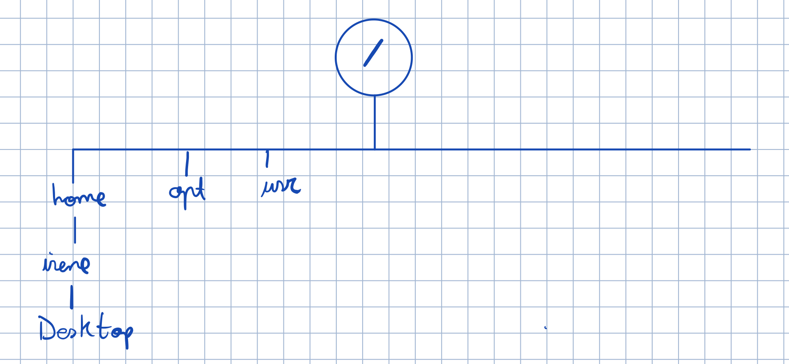
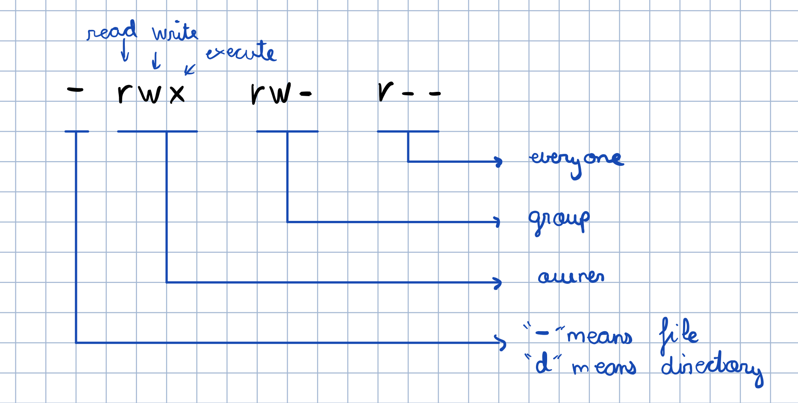
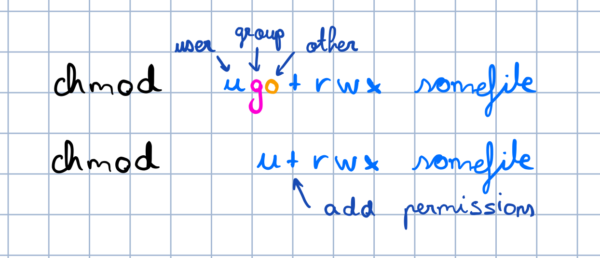
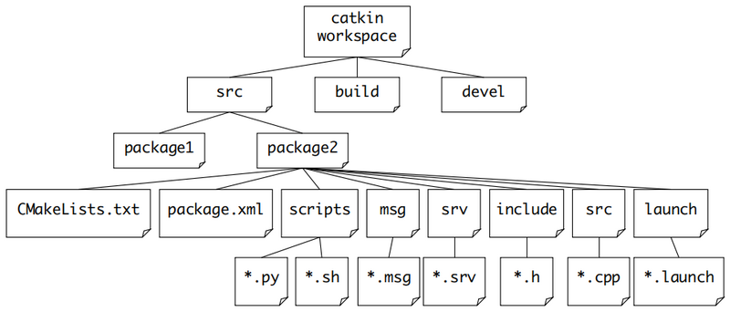

Day 1, 22- April 2020
Ubuntu main directory

Permissions
when you add "-l" to the ls command it shows you more info about the files, example: "ls -l /bin"
-rwxr-xr-x 3 root root 30200 2010-02-08 11:54 bzcat
lrwxrwxrwx 1 root root 6 2010-07-07 11:48 bzcmp -> bzdiff


Terminal vs Shell
Not confuse terminal and shell.
Shell is a program which processes commands and returns output , like bash in Linux . Terminal is a program that run a shell , in the past it was a physical device (Before terminals were monitors with keyboards, they were teletypes) and then its concept was transferred into software
bash is the shell of unix
The .bashrc file is a script that is executed whenever a new terminal session is started in interactive mode. This is what happens when you open a new terminal window by pressing Ctrl+Alt+T, or just open a new terminal tab.
The .bashrc file itself contains a series of configurations for the terminal session. This includes setting up or enabling: colouring, completion, the shell history, command aliases and more. The .bashrc file distributed with Ubuntu is well commented and you will be able to understand most of what it does just by reading it.
Copying, moving and removing files
move file "trial" from current directory to the directory "music": mv trial /home/irene/Music
For copy: cp and for removing: rm
List all files (even the hidden ones): "ls -a"
Create a txt file: "nano holi. txt"
then write wathever text and hit ctrl+x, click yes to save and enter to exit
What is a build system?
A build system is a relatively simple functional program that takes code as input and produces deployable software as output. It could be as simple as a makefile or a Visual Studio solution. The most important function of a build system is to compile source code (assuming a compiled language, of course). However, we often want to do more than that as a part of the build process. For example, in a production build system, we might want to:
CATKIN is the ROS buildsystem
A build system is responsible for generating 'targets' from raw source code that can be used by an end user. These targets may be in the form of libraries, executable programs, generated scripts, exported interfaces (e.g. C++ header files) or anything else that is not static code. In ROS terminology, source code is organized into 'packages' where each package typically consists of one or more targets when built.
To build targets, the build system needs information such as the locations of tool chain components (e.g. C++ compiler), source code locations, code dependencies, external dependencies, where those dependencies are located, which targets should be built, where targets should be built, and where they should be installed. This is typically expressed in some set of configuration files read by the build system.
With CMake, it is specified in a file typically called 'CMakeLists.txt'
catkin's workflow is very similar to CMake's but adds support for automatic 'find package' infrastructure and building multiple, dependent projects at the same time.
What is a Catkin workspace?
A catkin workspace is a folder where you modify, build, and install catkin packages. The following is the recommended and typical catkin workspace layout:
In general terms, the workspace is a folder which contains packages, those packages contain our source files
and the environment or workspace provides us with a way to compile those packages. It is useful when you
want to compile various packages at the same time and it is a good way of centralizing all of our developments.
https://developpaper.com/study-notes-of-autolabor-2-5-3-working-space-and-compiling-system-of-ros/

some people like to keep all of their packages in a single workspace, others like to group packages that they use for particular projects into separate workspaces.
Neither is necessarily better than the other.
Personally I keep separate workspaces for just about everything, and use workspace overlaying whenever I need certain packages in other workspaces.
Create a catkin workspace
$ mkdir -p ~/catkin_ws/src
$ cd ~/catkin_ws/
$ catkin_make
The primary thing that happens when you source your catkin workspace's devel/setup.bash file is that you are setting environment variables.
Overlay
Overlay in Spanish means "cubrir"
Overlaying refers to building and using a ROS package from source on top of an existing version of that same package. In this way your new or modified version of the package "overlays" the installed one.
Additionally, if you look in your current directory you should now have a 'build' and 'devel' folder. Inside the 'devel' folder you can see that there are now several setup.*sh files. Sourcing any of these files will overlay this workspace on top of your environment. To understand more about this see the general catkin documentation: catkin. Before continuing source your new setup.*sh file:
$ source devel/setup.bash